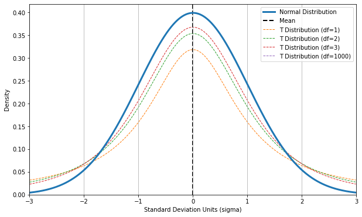
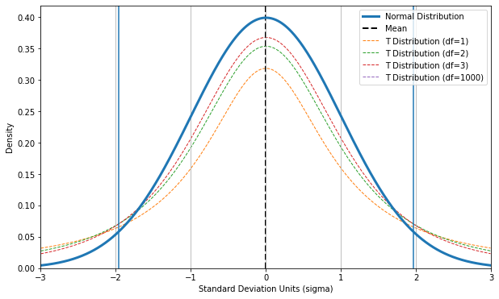
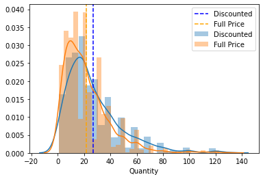
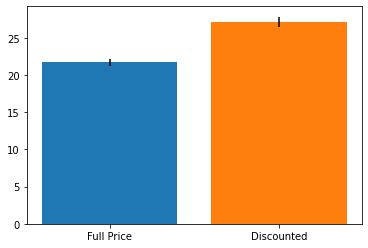
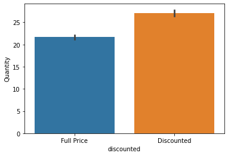
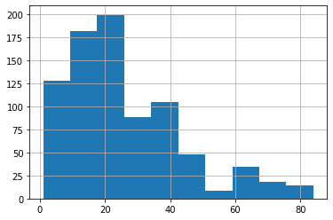
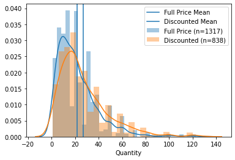

Sect 14 - Hypothesis Testing - T-Tests#
online-ds-ft-070620
08/11/20
Questions#
Topics / Learning Objectives#
Briefly Review: Normal distribution / Z-tests
Discuss Central Limit Theorem & Sampling
The T-Distribution (and degrees of Freedom)
Intro to AB Testing / Big-Picture Hypothesis Testing Workflow
Resources#
My Complete Outline / Resource Repo for Hypothesis Testing
Includes:
Practice Hypothesis Testing Project
Section 14: Hypothesis Testing#

Foundations of a Sound Experiment#
Control Group/Random Controlled Trials
If humans are administering the experiment and/or grading/recording observations about the groups, we should ideally use a double blind design (though single blind is better than nothing).

Sampling Techniques:
Sampling is independent
Sample is collected randomly
Sample is approximately normally distributed
Appropriate sample size
Reproducibility
P-Values & Null Hypotheses#
Null Hypothesis: There is no relationship between A and B
Example: “There is no relationship between this flu medication and a reduced recovery time from the flu”.
The Null Hypothesis is usually denoted as \(H_{0}\)
Alternative Hypothesis: The hypothesis traditionally thought of when creating a hypothesis for an experiment
Example: “This flu medication reduces recovery time for the flu.”
The Alternative Hypothesis is usually denoted as \(H_{1}\)
The one-sample \(z\)-test is used only for tests related to the sample mean.

\(\alpha\) (alpha): The marginal threshold at which you’re okay with rejecting the null hypothesis.
If you set an alpha value of \(\alpha = 0.05\), you’re essentially saying “I’m okay with accepting my alternative hypothesis as true if there is less than a 5% chance that the results that I’m seeing are actually due to randomness.”
p-value: The probability of observing a test statistic at least as large as the one observed, by random chance, assuming that the null hypothesis is true.
If you calculate a p-value and it comes out to 0.03, you can interpret this as saying “There is a 3% chance of obtaining the results I’m seeing when the null hypothesis is true.”
In simple terms:
\(p < \alpha\): Reject the Null Hypothesis and accept the Alternative Hypothesis
\(p >= \alpha\): Fail to reject the Null Hypothesis.
Example One-Tail Hypothesis
\(H_{1} : \mu_1 < \mu_2 \) The treatment group given this weight loss drug will lose more weight on average than the control group that was given a competitor’s weight loss drug
\( H_{0} : \mu1 >= \mu_2\) The treatment group given this weight loss drug will not lose more weight on average than the control group that was given a competitor’s weight loss drug”.
A Two-Tail Test is for when you want to test if a parameter falls between (or outside of) a range of two given values.
Example Two-Tail Hypothesis
\(H_{1} : \mu_1 \neq \mu_2\) “People in the experimental group that are administered this drug will not lose the same amount of weight as the people in the control group. They will be heavier or lighter”.
\(H_{0} : \mu_1 = \mu_2\) “People in the experimental group that are administered this drug will lose the same amount of weight as the people in the control group.”
When in doubt, do a 2-tailed test
!pip install -U fsds
from fsds.imports import *
fsds v0.2.22 loaded. Read the docs: https://fs-ds.readthedocs.io/en/latest/
| Handle | Package | Description |
|---|---|---|
| dp | IPython.display | Display modules with helpful display and clearing commands. |
| fs | fsds | Custom data science bootcamp student package |
| mpl | matplotlib | Matplotlib's base OOP module with formatting artists |
| plt | matplotlib.pyplot | Matplotlib's matlab-like plotting module |
| np | numpy | scientific computing with Python |
| pd | pandas | High performance data structures and tools |
| sns | seaborn | High-level data visualization library based on matplotlib |
[i] Pandas .iplot() method activated.
import scipy.stats as stats
x = np.arange(-4,4,.01)
y = stats.norm.pdf(x)
def plot_normal(x=None,y=None,mean=0,std=1,label='Normal Distribution'):
"""Plots x,y (normal distrubtion)"""
## Generate Distribution if x and y not provided
if x is None:
x = np.arange(-4,4,.01)
if y is None:
y = stats.norm.pdf(x,loc=mean,scale=std)
## Plot the distribution
fig,ax = plt.subplots(figsize=(10,6))
ax.plot(x,y,lw=3,label=label)
## Plot the mean and std grid
ax.axvline(mean,color='k',label='Mean',lw=2,ls='--',zorder=0)
ax.grid(which='major',axis='x')
## Add labels
ax.set(xlabel='Standard Deviation Units (sigma)',
ylabel='Density',
ylim=0,
xlim=(round(min(x)),round(max(x))))
ax.legend()
return fig,ax
The T-Distribution & T-Tests#
To adjust for small sample sizes, statisticians created the T-Distribution for hypothesis testing in lieu of the normal distribution.
## The T-Distribution
x = np.arange(-3,3,.01)
y = stats.norm.pdf(x,loc=0,scale=1)
## Plot the Normal Distrubtion
fig,ax = plot_normal(x,y)#plt.subplots(figsize=(8,4),nrows=1)
# ax.plot(x,y,zorder=-1,lw=3,label='Normal Distribution')
## Adding T-Distribution
for degrees_freedom in [1,2,3,1000]:#,5]:#,10,1000]:
# degrees_freedom=5
y_T = stats.t.pdf(x,df=degrees_freedom)
ax.plot(x,y_T,zorder=-1,ls='--',lw=1,label=f'T Distribution (df={degrees_freedom})')
ax.legend()
<matplotlib.legend.Legend at 0x1322b6240>

## Confidence Interval
ci_low,ci_high = stats.t.interval(alpha = 0.95, # Confidence level
df= len(x)-1, # Degrees of freedom
loc = 0, # Sample mean
scale = 1) # Standard deviation estimate
ax.axvline(ci_low)
ax.axvline(ci_high)
fig

Hypothesis Testing Overview#
Complete Hypothesis Testing Workflow Repo + Practice Project:
Two resource from repo included in this repo.
Open
hypothesis_testing_workflow-v2_WIP.ipynbOpen
Hypothesis Testing with SciPy_codeacademy slides.pdf
Hypothesis Testing (summary)#
Separate data in group vars.
Visualize data and calculate group n (size)
Select the appropriate test based on type of comparison being made, the number of groups, the type of data.
For t-tests: test for the assumptions of normality and homogeneity of variance.
Check if sample sizes allow us to ignore assumptions, and if not:
Test Assumption Normality
Test for Homogeneity of Variance
Choose appropriate test based upon the above
Perform chosen statistical test, calculate effect size, and any post-hoc tests.
To perform post-hoc pairwise comparison testing
Effect size calculation
Cohen’s d
Statistical Tests Summary Table#
Parametric tests (means) |
Function |
Nonparametric tests (medians) |
Function |
|---|---|---|---|
1-sample t test |
|
1-sample Wilcoxon |
|
2-sample t test |
|
Mann-Whitney U test |
|
One-Way ANOVA |
|
Kruskal-Wallis |
|
| Factorial DOE with one factor and one blocking variable |Friedman test |
Hypothesis Testing Applied with Northwind Database#

Hypothesis 1#
Do discounted items sell sell in greater/lesser quantities than full price products?
\(H_0\):
\(H_A\):
STEP 1: Determine the category/type of test based on your data.#
What kind of test?#
Using the answers to the above 2 questions: select the type of test from this table.#
What type of comparison? |
Numeric Data |
Categorical Data |
|---|---|---|
Sample vs Known Quantity/Target |
1 Sample T-Test |
Binomial Test |
2 Samples |
2 Sample T-Test |
Chi-Square |
More than 2 |
ANOVA and/or Tukey |
Chi Square |
STEP 2: Do we meet the assumptions of the chosen test?#
import sqlite3
import pandas as pd
import matplotlib.pyplot as plt
import seaborn as sns
conn = sqlite3.connect("../../datasets/Northwind_small.sqlite")
cur = conn.cursor()
df = pd.DataFrame(cur.execute('select * from OrderDetail').fetchall(),
columns=[col[0] for col in cur.description])
df
| Id | OrderId | ProductId | UnitPrice | Quantity | Discount | |
|---|---|---|---|---|---|---|
| 0 | 10248/11 | 10248 | 11 | 14.00 | 12 | 0.00 |
| 1 | 10248/42 | 10248 | 42 | 9.80 | 10 | 0.00 |
| 2 | 10248/72 | 10248 | 72 | 34.80 | 5 | 0.00 |
| 3 | 10249/14 | 10249 | 14 | 18.60 | 9 | 0.00 |
| 4 | 10249/51 | 10249 | 51 | 42.40 | 40 | 0.00 |
| ... | ... | ... | ... | ... | ... | ... |
| 2150 | 11077/64 | 11077 | 64 | 33.25 | 2 | 0.03 |
| 2151 | 11077/66 | 11077 | 66 | 17.00 | 1 | 0.00 |
| 2152 | 11077/73 | 11077 | 73 | 15.00 | 2 | 0.01 |
| 2153 | 11077/75 | 11077 | 75 | 7.75 | 4 | 0.00 |
| 2154 | 11077/77 | 11077 | 77 | 13.00 | 2 | 0.00 |
2155 rows × 6 columns
df['discounted'] = df['Discount'].apply(lambda x: 'Discounted' if x >0 else "Full Price")
df
| Id | OrderId | ProductId | UnitPrice | Quantity | Discount | discounted | |
|---|---|---|---|---|---|---|---|
| 0 | 10248/11 | 10248 | 11 | 14.00 | 12 | 0.00 | Full Price |
| 1 | 10248/42 | 10248 | 42 | 9.80 | 10 | 0.00 | Full Price |
| 2 | 10248/72 | 10248 | 72 | 34.80 | 5 | 0.00 | Full Price |
| 3 | 10249/14 | 10249 | 14 | 18.60 | 9 | 0.00 | Full Price |
| 4 | 10249/51 | 10249 | 51 | 42.40 | 40 | 0.00 | Full Price |
| ... | ... | ... | ... | ... | ... | ... | ... |
| 2150 | 11077/64 | 11077 | 64 | 33.25 | 2 | 0.03 | Discounted |
| 2151 | 11077/66 | 11077 | 66 | 17.00 | 1 | 0.00 | Full Price |
| 2152 | 11077/73 | 11077 | 73 | 15.00 | 2 | 0.01 | Discounted |
| 2153 | 11077/75 | 11077 | 75 | 7.75 | 4 | 0.00 | Full Price |
| 2154 | 11077/77 | 11077 | 77 | 13.00 | 2 | 0.00 | Full Price |
2155 rows × 7 columns
df.describe()
| OrderId | ProductId | UnitPrice | Quantity | Discount | |
|---|---|---|---|---|---|
| count | 2155.000000 | 2155.000000 | 2155.000000 | 2155.000000 | 2155.000000 |
| mean | 10659.375870 | 40.793039 | 26.218520 | 23.812993 | 0.056167 |
| std | 241.378032 | 22.159019 | 29.827418 | 19.022047 | 0.083450 |
| min | 10248.000000 | 1.000000 | 2.000000 | 1.000000 | 0.000000 |
| 25% | 10451.000000 | 22.000000 | 12.000000 | 10.000000 | 0.000000 |
| 50% | 10657.000000 | 41.000000 | 18.400000 | 20.000000 | 0.000000 |
| 75% | 10862.500000 | 60.000000 | 32.000000 | 30.000000 | 0.100000 |
| max | 11077.000000 | 77.000000 | 263.500000 | 130.000000 | 0.250000 |
df.groupby('discounted')['Quantity'].describe()
| count | mean | std | min | 25% | 50% | 75% | max | |
|---|---|---|---|---|---|---|---|---|
| discounted | ||||||||
| Discounted | 838.0 | 27.109785 | 20.771439 | 1.0 | 12.0 | 20.0 | 36.0 | 130.0 |
| Full Price | 1317.0 | 21.715262 | 17.507493 | 1.0 | 10.0 | 18.0 | 30.0 | 130.0 |
groups = df['discounted'].unique()
groups
array(['Full Price', 'Discounted'], dtype=object)
## Separate group data into separate vars/keys
data = {}
for grp in groups:
group_df = df.groupby('discounted').get_group(grp)['Quantity']#.values
data[grp] = group_df
data
{'Full Price': 0 12
1 10
2 5
3 9
4 40
..
2147 2
2148 2
2151 1
2153 4
2154 2
Name: Quantity, Length: 1317, dtype: int64,
'Discounted': 6 35
7 15
8 6
9 15
11 40
..
2144 2
2146 3
2149 2
2150 2
2152 2
Name: Quantity, Length: 838, dtype: int64}
ax = sns.distplot(data['Discounted'],label='Discounted')
ax.axvline(data['Discounted'].mean(),color='blue',ls='--',label='Discounted')
sns.distplot(data['Full Price'],label='Full Price')
ax.axvline(data['Full Price'].mean(),color='orange',ls='--',label='Full Price')
ax.legend()
<matplotlib.legend.Legend at 0x1341dce48>

for grp,grp_data in data.items():
plt.bar(grp,grp_data.mean(),yerr=stats.sem(grp_data))

sns.barplot(data=df,x='discounted',y='Quantity',ci=68)
<AxesSubplot:xlabel='discounted', ylabel='Quantity'>

z_data= stats.zscore(data['Discounted'])
idx_outlier = np.abs(z_data)>3
idx_outlier.sum()
12
data['Discounted'][~idx_outlier]
6 35
7 15
8 6
9 15
11 40
..
2144 2
2146 3
2149 2
2150 2
2152 2
Name: Quantity, Length: 811, dtype: int64
BOOKMARK#
idx_outlier.sum()
15
for grp, grp_data in data.items():
z_data= stats.zscore(grp_data)
idx_outlier = np.abs(z_data)>3
print(f"There were {idx_outlier.sum()} outliers in {grp}")
data[grp]= grp_data[~idx_outlier]
There were 20 outliers in Full Price
There were 15 outliers in Discounted
data['Discounted'].hist()
<AxesSubplot:>

for grp, grp_data in data.items():
stat,p =stats.normaltest(grp_data)# test_for_normality(grp_data,label=grp,get_p=True)
print(f"For {grp}, normaltest p = {round(p,4)}")
ax = sns.distplot(grp_data, label= f"{grp} (n={len(grp_data)})")
ax.axvline(grp_data.mean(),label=f'{grp} Mean')
ax.legend()
For Full Price, normaltest p = 0.0
For Discounted, normaltest p = 0.0
<matplotlib.legend.Legend at 0x1349aeac8>

res = [*list(data.values())]
res
[0 12
1 10
2 5
3 9
4 40
..
2147 2
2148 2
2151 1
2153 4
2154 2
Name: Quantity, Length: 1317, dtype: int64,
6 35
7 15
8 6
9 15
11 40
..
2144 2
2146 3
2149 2
2150 2
2152 2
Name: Quantity, Length: 838, dtype: int64]
stats.levene(*list(data.values()))
LeveneResult(statistic=14.832671704073421, pvalue=0.00012091378376079568)
stats.ttest_ind(*list(data.values()),equal_var=False)
Ttest_indResult(statistic=-6.239069142123973, pvalue=5.65641429030433e-10)
Next Class: Real-World Science / Experimental Design#
The Role of Stress Neurons in the Amygdala in Addiction/Binge Drinking#
The Opponent-Process Theory of Addiction#

We will be talking through some of the experiments from my Postdoctoral research on the roll of stress neurons in the escalation of binge drinking.
James’ Neuroscience Research Poster: Society for Neuroscience 2016

Hypothesis#
Based on prior evidence in the field, stress neurons in the amygdala are believed to be responsible for the negative emotions that promote binge consumption to relieve negative symptoms
\( H_1\): Increasing the activity of stress neurons (CRF neurons) in the amygdala will increase the amount of alcohol consumed by binge-drinking mice.
\(H_0\): Stimulation of CRF neurons has no effect on the amount of alcohol consumed.

Experimental Design#


The Opponent-Process Theory of Addiction#
from fsds.imports import *
plt.style.use('seaborn-notebook')
pd.set_option('display.max_columns',0)
pd.set_option('display.precision',3)
Obtaining/Preprocessing Data#
import os
print(os.getcwd())
# os.listdir('../../datasets/')
df = pd.read_csv('../../datasets/mouse_drinking_data_cleaned.csv',#"../../datasets/mouse_drinking_data_cleaned.csv")#,
index_col=0)
df.drop('Sex',inplace=True,axis=1)
df
Laying Out Our Approach#
Make a dict/lists of the column names that should be averaged together (
col_dict)Make a new df of means using
col_dictMake a grp dict using
df_means.groupby('Group').groups
Visualize the two populations
Prepare for hypothesis tests
Either use
grpsdict to reference the correct columsn to pass into tests
## Loop through the differnet phases of the experiment
phases = ['BL','S','PS','R1','R2']
## save corresponding column names as values
col_dict = {}
for phase in phases:
col_dict[phase] = [col for col in df.columns if col.startswith(phase) ]
col_dict
## Get then opposite of col_dict
phase_dict = {}
for phase,colnames in col_dict.items():
for col in colnames:
phase_dict[col] = phase
phase_dict
Calculating individual mouse means by phase#
cols = col_dict['BL']
df[cols].mean(axis=1)
df_means = df.reset_index()[['Mouse_ID','Group']].copy()
df_means
## Calculated the means by phase
df_means = df.reset_index(drop=False)[['Mouse_ID','Group']].copy()
for phase, cols in col_dict.items():
df_means[phase] = df[cols].mean(axis=1)
df_means
df
Getting Group Data For EDA & Testing#
## Get grps
data = {}
## Two different ways of using groupby
grps = df_means.groupby('Group').groups
## For each group
for grp in grps:
## Save the group df as grp name
data[grp] = df_means.groupby('Group').get_group(grp)
# Display data
display(data[grp].head().style.set_caption(grp))
data.keys()
data['Control']
Plotting Group Means + Standard Error of the Mean#
from scipy.stats import sem
## Create lists for saving x,y, and yerr
x = []
y = []
y_err = []
## Select a phase to visualize
phase = "BL"
# For each group
for group in data:
## grab the correct phasen col from group data
grp_data = data[group][phase]
## Save x,y
x.append(group)
y.append(grp_data.mean())
## Calc and save error
y_err.append(sem(grp_data))
y_err
fig,ax = plt.subplots(figsize=(2,4))
plt.bar(x,y,yerr=y_err,color=['b','g'])
def plot_bars_yerr(data,phase = "BL"):
"""Plots the group means +/- standard error of the mean."""
from scipy.stats import sem
## Save x,y, and yerr
x = []
y = []
y_err = []
for group in data:
grp_data = data[group][phase]
x.append(f"{group}")
y.append(grp_data.mean())
y_err.append(sem(grp_data))
fig,ax = plt.subplots(figsize=(3,5))
ax.bar(x,y,yerr=y_err,color=['k','b'])
ax.set_title(f"Phase = {phase}")
ax.set(ylabel='# of Licks')
return fig,ax
Run 2-sample T-Test on Baseline Days#
f,a = plot_bars_yerr(data,phase = "BL")
test_phase = "BL"
f,a = plot_bars_yerr(data,phase)
for grp in data:
pass
for grp,grp_df in data.items():
print(grp)
# display(grp_df)
grp_df
import scipy.stats as st
test_phase = 'BL'
## Make list of list of headers
results = [['Group','n','Normaltest Stat','p','sig?']]
## Make an empty list for our group data
test_equal_var = []
## Loop through the data dictionary
for grp,grp_df in data.items():
## Grab the correct phase column from the group df
grp_data = grp_df[test_phase].copy()
## Append group data to list of group data
test_equal_var.append(grp_data)
## Test for nomrality and save result
stat,p = st.normaltest(grp_data)
results.append([grp,len(grp_data),stat,p,p<.05])
results
pd.DataFrame(results[1:],columns=results[0])
Adding Levene’s Test#
import scipy.stats as st
## Make list of list of headers
results = [['Group','n','Normaltest Stat','p','sig?']]
## Make an empty list for our group data
test_equal_var = []
## Loop through the data dictionary
for grp,grp_df in data.items():
## Grab the correct phase column from the group df
grp_data = grp_df[test_phase].copy()
## Append group data to list of group data
test_equal_var.append(grp_data)
## Test for nomrality and save result
stat,p = st.normaltest(grp_data)
results.append([grp,len(grp_data),stat,p,p<.05])
## Test for equal variance
stat, p = st.levene(*test_equal_var)
results.append(['Equal Variance','all',stat,p,p<.05])
results_df = pd.DataFrame(results[1:],columns=results[0])
results_df
Run Correct Test#
st.mannwhitneyu(*test_equal_var)
## Functionize code for testing other phases
import scipy.stats as st
def test_assumptions(data,test_phase):#,plot=True):
## Make list of list of headers
results = [['Phase','Group','n','Normaltest Stat','p','sig?']]
## Make an empty list for our group data
test_equal_var = []
## Loop through the data dictionary
for grp,grp_df in data.items():
## Grab the correct phase column from the group df
grp_data = grp_df[test_phase].copy()
## Append group data to list of group data
test_equal_var.append(grp_data)
## Test for nomrality and save result
stat,p = st.normaltest(grp_data)
results.append([test_phase,grp,len(grp_data),stat,p,p<.05])
## Test for equal variance
stat, p = st.levene(*test_equal_var)
results.append([test_phase,'Equal Variance','all',stat,p,p<.05])
results_df = pd.DataFrame(results[1:],columns=results[0])
return results_df
res_df= test_assumptions(data,'S')
res_df
fig,ax = plot_bars_yerr(data,phase='S')
## Add Plotting to function
import scipy.stats as st
def test_assumptions(data,test_phase,plot=True):
if plot:
fig,ax = plot_bars_yerr(data,phase=test_phase)
## Make list of list of headers
results = [['Phase','Group','n','Normaltest Stat','p','sig?']]
## Make an empty list for our group data
test_equal_var = []
## Loop through the data dictionary
for grp,grp_df in data.items():
## Grab the correct phase column from the group df
grp_data = grp_df[test_phase].copy()
## Append group data to list of group data
test_equal_var.append(grp_data)
## Test for nomrality and save result
stat,p = st.normaltest(grp_data)
results.append([test_phase,grp,len(grp_data),stat,p,p<.05])
## Test for equal variance
stat, p = st.levene(*test_equal_var)
results.append([test_phase,'Equal Variance','all',stat,p,p<.05])
results_df = pd.DataFrame(results[1:],columns=results[0])
return results_df
RESULTS = {}
for phase in phases:
res_df = test_assumptions(data,phase)
display(res_df)
plt.show()
df_means